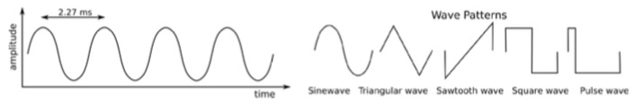
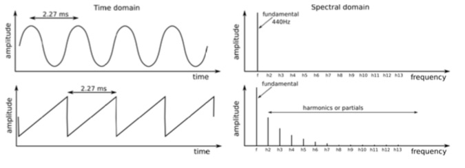

A tutorial for learning the basics of subtractive synthesizers
Oscillators
The oscillator is the circuit that produces the basic waveforms for sound creation. It produces an electronic signal characterized by a repetitive, shaped pattern (called a waveform). Most subtractive synthesizers will provide some or all of the following basic waveforms: sine wave, triangular wave, sawtooth wave, square, and pulse waves.

The different waveform shapes have different timbres. For example, the sine wave sounds dark and plain, while the sawtooth wave sounds very bright. The square wave sounds a bit like a clarinet and the pulse wave resembles an oboe. The Sine wave is a pure waveform, meaning that it is only made up of a fundamental frequency. The Saw, Square and Triangle are more complex waveforms and are made up of multiple sine waves — a fundamental sine wave that determines the base frequency, and sine waves representing higher harmonics (also called overtones or partials) of that frequency which, when added together, produce a unique timbre. These harmonics are an integer multiple of the fundamental frequency, i.e., the second harmonic is twice the fundamental frequency, the third harmonic is three times the fundamental, and so on. A good reference that many people know would be the drawbars on an organ. The drawbars increase the volume of sine waves that are tuned to the harmonic overtone series. When you increase the levels, you are making a pure tone into a complex waveform.

The rate at which the oscillator oscillates creates the pitch. The oscillators in a synthesizer are no different than ones found on electrical test equipment, except that they can be put under VOLTAGE CONTROL. A music synthesizer allows you to change the pitch of the oscillator by using a voltage. In the case of MicroBrute, the keyboard, LFO, Envelope or external voltage source can be voltage control sources that affect the pitch.